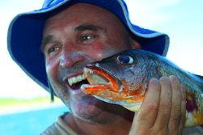
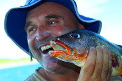
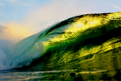
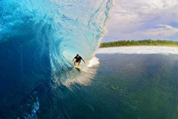
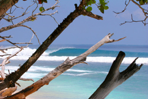
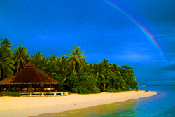
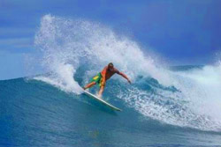

|
| Mid-Season Update |
| |
G'day everyone from Sumatran
Surfariis! We're now well into the heart of our 13th
season, and as usual lots of exciting stuff has happened since
our last update. It's been a very good half of the year surf
wise, and like the last 2 years it was pretty darn quiet up
until about the end of June. The crowds have picked up a bit
recently, but all our guides are experts at dodging crowds,
so we're still scoring quite a few great empty sessions or with
just 1 or 2 other boats. There haven't been too many huge swells,
but it's been very, very consistent with more exposed breaks
being at least double-overhead on a regular basis.
Also,
we've had about 4 solid months now to really explore up in North
Sumatra, and Scuzz reports that there has definitely been some
sinkage in the reefs since the last big quake in that region.
It's much more subtle than people were initially thinking, but
Scuzz notices an overall improvement in waves and definitely
a few are significantly better than last year. On the
opposite end, we've been spending quite a bit of time in the
southern tip of the Ments as well, an area which actually lifted
a bit since the Padang quake last September. We've done quite
a bit of homework down there, and we've had a chance to test
some spots on the right swell and wind directions we've been
hoping for, and found some good results. Some of them REALLY
good, and right under people's noses. |
    |
In general, the winds have been really
good. However, we have had our fair share of crazy weather,
including three brutal storms that had us searching for the
ultra protected anchorages. So, overall it's been a bit wetter
than it usually is for this time of year, but somehow it seems
to have improved the fishing. After a slow first 3 months of
the season, the guys are really starting to reel them in now.
We're
happy to report that our newest boat Mikumba
2 is doing really well. Scuzz has moved over
from Southern
Cross to guide most of the trips on her, and
most of his long-time return guests have followed him as well.
We've received some great recommendations for improvements from
our seasoned vets, and we are definitely looking forward to
implementing some of them in the off season. But even in it's
current state, our guests are basically getting this massive
boat for a real bargain in 2010, because it's the introductory
year for it as a charter boat.
Speaking
of Southern
Cross, we're seriously
thinking about running her out of Sibolga in 2011, and making
her a strictly "North Only" boat. Starting the trips in Sibolga
will allow us to potentially travel further north, past the
Banyaks and up into Simeulue and other hidden regions Scuzz
has been researching. We've been getting Southern
Cross in really
great shape in expectation for this. We've constructed a hardtop
shade deck by the bow for sunset beers, strengthened the hull,
added a new TV and fridge, and fitted out the saloon with new
seating and stowage. The legendary boat with more experience
in North Sumatra than any other just got even better! |
 |
| In fact, ALL of our boats and crews
have really got things dialed. I went on
Budyadahri
in March/April and was absolutely floored at some of the structural
improvements made since the last time I was on her a couple
years ago. And I was fully impressed at the operation Bevo,
Josh, and the Indo crew were running. Bevo always had us in
the best spot and Josh is in the water 187 hours a day shooting
photos, and then producing epic slideshows almost every night.
The crew waits on you hand and foot, but still makes you feel
like you're hanging out with good friends. The food has been
absolutely epic, with items such as lobster and rack of lamb
being regular additions. Yu San and Webby have the same excellent
routine going on Mikumba
1, and they have been getting rave reviews all
year long.
We had essentially the same crew for
many years with very little turnover. That massive experience
and team unity is a huge plus, and something that really distinguishes
us from most other charter operators. We've also began to slowly
introduce a few very experienced and highly respected new crew
into our gang, such as Christian "Barts" Barton (gaffing on
the righthander below). Anyone who has surfed Macaronis in the
past couple years has probably witnessed Barts' big lanky frame
absolutely annihilating it on his backhand during his recent
tenure as the Maccas Resort surf guide. He's also guided and
taken trips on Sjalina, Indies Trader, Freedom and Kuda Laut
during his 15+ years of extensive experience surfing this area.
He's also great chef, guitarist, and just an all-around nice
guy. So we're happy that he's subbed for us on a few trips and
hope he'll be guiding for us a lot more in the future. |
|  |
| Aloita
is looking better than ever now as well. Everyone seems really
stoked on the new husband-and-wife management team of Marco
& Monica, as well our new surf guide Davi. Marco & Monica,
both dive masters, are an Italian couple that have added a real
European feel to the cuisine and resort as a whole. Davi is
a great young guy with a ton of Mentawai surfing experience
who speaks 5 languages, so he's the perfect guide to have one
your side. For those of you looking for an ideal way to decompress
and relax for a week or so before or after your boat trip, Aloita
is a great option.
Anyway,
we're turning the corner on the midway point of the season,
and we've still got a few gaps for those of you who want to
join us. We've got a couple trips on the cusp of the peak season
that are still available, such as the September 25 - October
9 trip on Mikumba 1, that will get tons of swell but with far
fewer boats than July/August. After that, we get into the truly
quiet off season of November - February, which is Scuzz's favorite
time. We have great swell magnets when it's small and the choice
of the very best reefs without boats when the swell cranks.
This is a lot what it was like in the earlier days: no camps,
no boats, no hurrying to surf before another boat arrives. It's
a great time, especially if clean head- to head-and-a-half-high
waves are what you're after. |
| |
| So we've got several gaps that can suit
solo guys, small groups, or full bookings. You can always check
the schedule
page for the latest. Mikumba
2 is not reflected on the schedule, but we have a
new website redesign in the works and it will be up on there
when that's complete. But in the meantime feel free to contact
me directly if you have any questions about the schedule, or
if you feel like dropping us a line just to say hi! We're having
a great time as usual, and we hope you come to visit us for
a surf soon.
Take
care and best wishes to all,
Danny "Slayer" Siudara
Sumatran Surfariis
www.sumatransurfariis.com.br |
|
|
| |
|